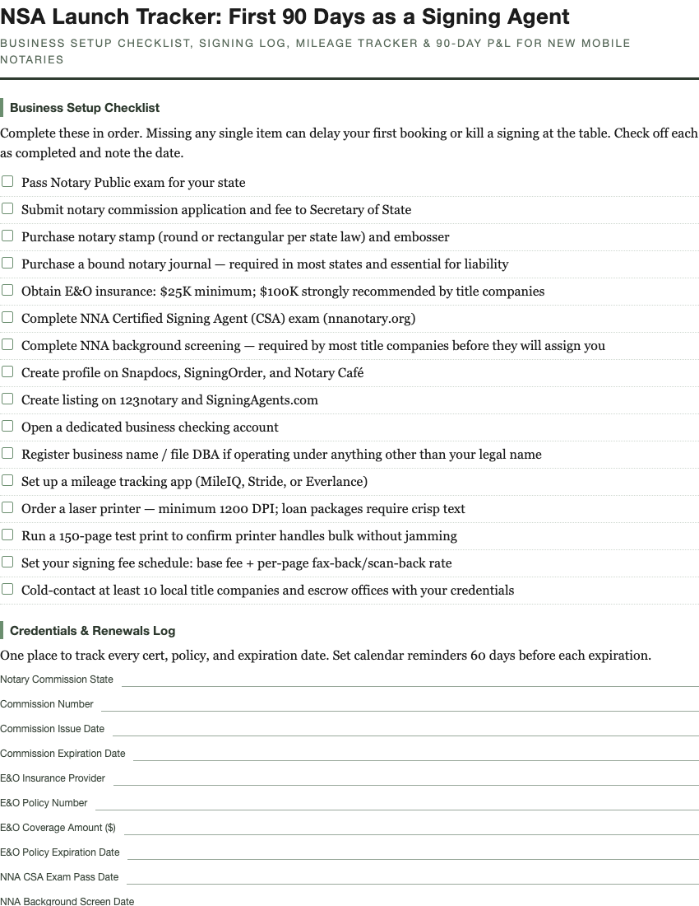

NSA Launch Tracker: First 90 Days as a Signing Agent
For new notary loan signing agents launching a mobile business

$9 · instant PDF download
Buy on Payhip
Buy on Gumroad
Everything a new Notary Signing Agent needs to track from commission to first closing. Built for the exact chaos of launching a mobile signing business while juggling E&O insurance, Snapdocs profiles, and your first table. Print once, use every day for your first three months.
What's inside
- Business setup checklist
- Credentials & renewals log
- Weekly signing log
- Monthly expense & mileage tracker
- Title company & signing service outreach log
- 90-day revenue planner
- Signing table prep checklist
Format
Delivered as a printable PDF. Print once and reuse through your first 90 days. Instant download after checkout.
Related: notary signing agent planner, NSA business tracker, mobile notary income tracker, loan signing agent workbook, notary mileage expense tracker, signing agent 90 day plan, notary side hustle tracker.